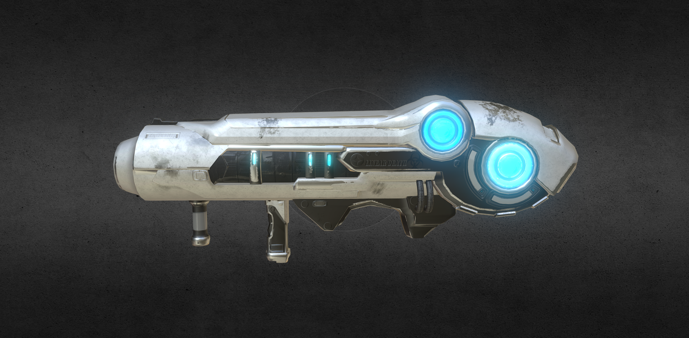
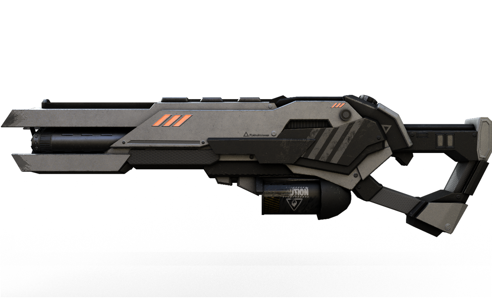
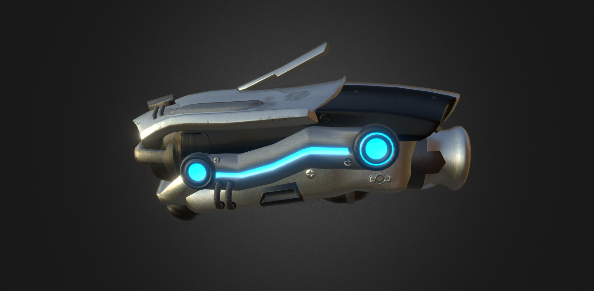
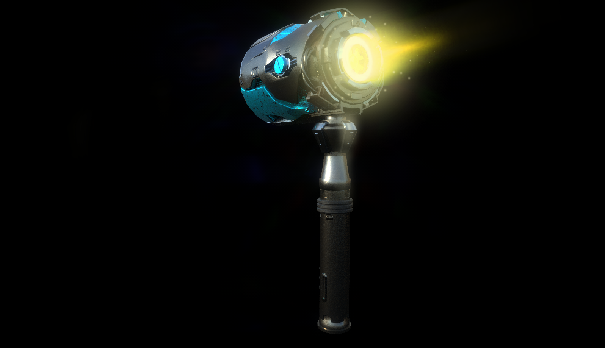
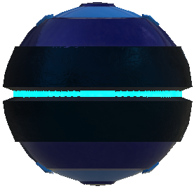
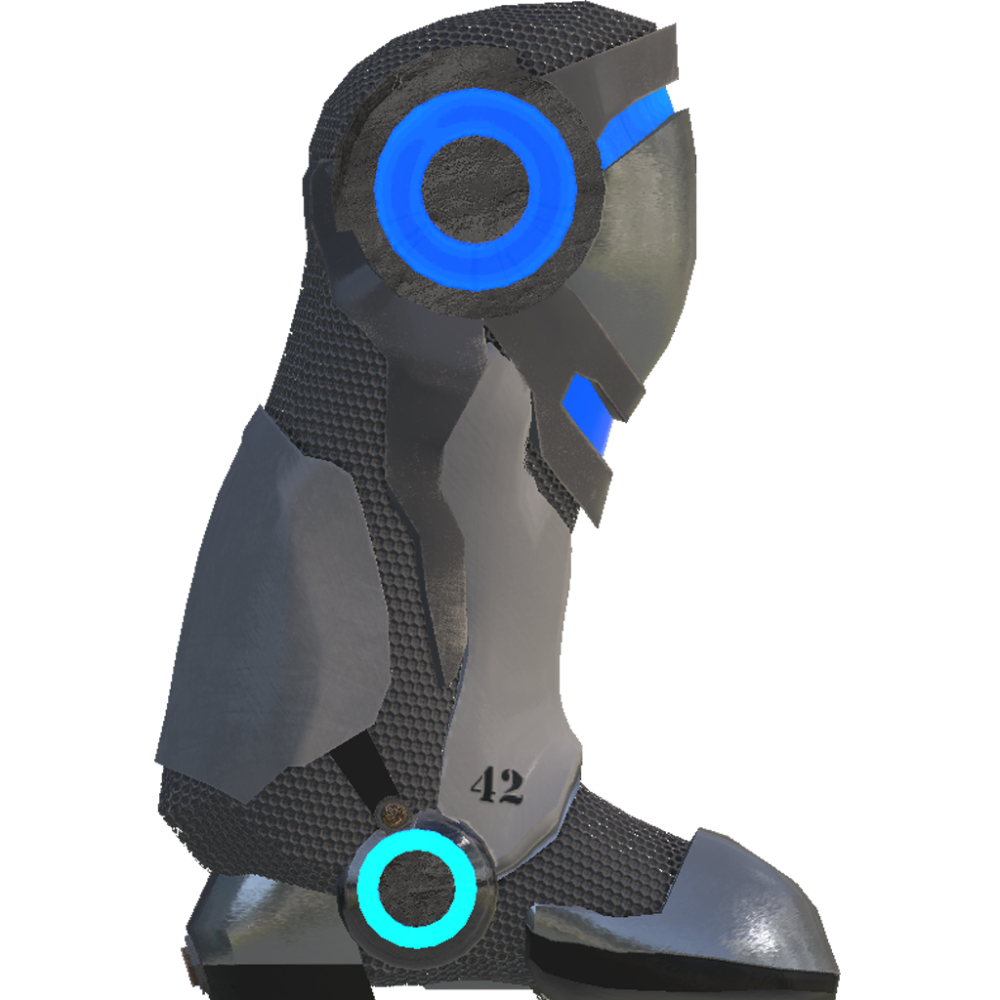

Linear Death
The linear death is essentially a large laser held with two hands. A normal human could not hold this weapon very easily. The weapon is held on the shoulder, and slows the speed of the player while walking. The player cannot sprint while this weapon is equipped
STANDARD ATTACK: 3 beam bursts that recharge themselves after used
SPECIAL ATTACK: 1 very large beam that can be used 5 seconds after it was last used.
Flamethrower
Very self explanatory. A basic flamethrower that shoots flames up to 15m from the player. Does 6 damage to the target player's health per second.
STANDARD ATTACK: Regular flames that fly up to 15m from the player in the player's facing direction
Harpoon Bracers
Two bracers that shoot harpoons. Each bracer is worn on the outside of the forearm, so the harpoon is shown over the player's fist
STANDARD ATTACK: The player will attempt to attack a player within melee range of him. If he cannot attack a person within melee range, then the player will shoot a harpoon from their right hand.
The harpoons travel at 75m per second.
SPECIAL ATTACK: Usable 10 seconds after it was last used. The player will shoot tethered harpoons from both hands. Each harpoon travels 30m from the player. If the harpoon collides with another character, the player will be tethered to that player's location for 3 seconds.
Kinetic Gauntlets
Two large and bulky metal fists that extend up to the player's elbows. Very similar to Vi from League of Legends.
STANDARD ATTACK: There are three attacks/actions that Kinetic Gauntlets possess: Jab-10 damage, Hook-15 damage and Uppercut-20 damage. Uppercut shoots the other player upwards into the air, and will stay in the air for 1 second.
SPECIAL ATTACK: Can be used 5 seconds after the last special cast was used. This attack launches the player forward in the direction that they're facing.
If they do not contact anything, they are stunned for 1 second.
If they contact a player, the other player is stunned for 2 seconds, and deals 20 damage.
If they contact a destructible object, it creates a hole if it's a wall, or destroys the object otherwise.
Tectonic Hammers
Two large hammers enhanced by "technology". A giant hammer can be combined from the 2 hammers that is held and swung with both hands and arms respectively.
STANDARD ATTACK: For the 2 hammers, if there is a enemy or object in melee range, the player will swing the right hammer, and deal 6 damage if the object was a player. Otherwise, the character strikes the ground with the left hammer, and launches a rock 15cm in diameter into the air. The character strikes the rock with the right hammer launching it forward in the player's facing direction.
For the large hammer, it swings once per second
SPECIAL ATTACK: For the 2 hammers, it can be used 10 seconds after the last time it was used. The character will leap in the air, and slam the ground with both fists dealing damage in an area. If the ground is destructible, it creates a hole in the object.
No special attack exists for the large hammer.
Singularity Grenade
When this grenade collides with the ground, it pulls all objects within 10 meters of it towards it. After a few seconds, it explodes and damages the objects around it.
Arc Trap
This weapon shoots lighting at players surrounding it, after being placed on the ground by a player.
Propulsion Pack

Essentially a jetpack that launches the player upwards for 10 seconds.
The Propulsion Pack recharges one unit of fuel every 10 seconds, so every 100 seconds, the Propulsion Pack can go from empty to full.
Anti-Grav boots
Boots that allow the player to walk on any surface along with the regular ground beneath them. Very much like walking on walls.
If they are deactivated, it goes on cooldown for 30 seconds. After 30 seconds, they can be activated again.
Health Pack
Trip Wire
This is a long wire that can be bound to 2 points that are set by the player, and have a thin wire running from both points.
If an enemy player activates the trip wire, it explodes dealing 15 damage to the activating player.
If the player sets the trip wire to a point, they cannot set the other point more than 10m from the first point.
Press Up and Down arrow keys to change the model
Left-Click and drag to rotate the models
Right-Click and drag to move the camera
MODEL NAME
Like us on Facebook!
Follow us on Twitter!